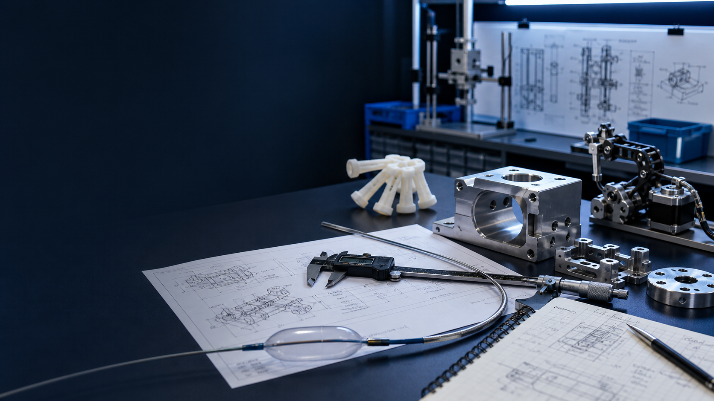

Medical Device R&D
Exposure to regulated R&D workflows, fixture concepts, documentation, cGMP context, and ISO 13485-style engineering discipline.

Mechanical design · MedTech R&D · Robotics
Mechanical Engineering student at Texas A&M with a Biomedical Engineering minor, focused on fixture design, catheter systems, surgical devices, mechanism design, testing, and hands-on R&D prototyping.
Engineering focus
Exposure to regulated R&D workflows, fixture concepts, documentation, cGMP context, and ISO 13485-style engineering discipline.
SolidWorks-based design updates, enclosure concepts, mechanism layouts, DFM thinking, tolerance/clearance iteration, and prototype builds.
Benchtop testing, tensile stress-strain analysis, failure characterization, catheter prototype evaluation, and 3D printed iteration.
Selected engineering projects
Designed non-proprietary fixture concepts to improve repeatable puncture testing, needle indexing, retention, and engagement consistency.
Redesigned enclosure and fixture concepts to improve safety, mounting, catheter guidance, and manufacturability.
Read case studyAnalyzed post-bent bioabsorbable magnesium staples through tensile testing, degradation evaluation, and failure characterization.
Read case studyFabricated and evaluated catheter prototype concepts for fetal hypoplastic left heart syndrome research.
Read case studyCo-authored soft robotic harvesting gripper work with TPU prototypes, cable routing, motor spool design, and experimental testing.
Read case studySupported production improvements, SOPs, quality documentation, equipment evaluation, and bakery expansion planning.
Read case studyExperience
Supported non-proprietary mechanical design, prototyping, test fixture concepts, manufacturing fixture updates, aluminum enclosure design, and documentation in a regulated medical device R&D environment.
Contributed to bioabsorbable staple testing, RF balloon catheter prototype evaluation, and soft robotic gripper research with a focus on testing, iteration, and mechanical behavior.
Worked on process improvement, production data, SOPs, quality documentation, vendor/equipment evaluation, and expansion planning with measurable labor and cost improvements.
Technical skills
My strongest fit is at the intersection of CAD-based mechanical design, fixture/prototype development, benchtop testing, and documentation-heavy engineering environments.
SolidWorks, Inventor, Onshape, AutoCAD, assemblies, drawings, DFM, tolerance thinking.
3D printing, PLA/PETG/TPU, heat-set inserts, soldering, hand tools, fixture design, aluminum enclosure design.
Tensile testing, stress-strain analysis, failure characterization, corrosion/degradation testing, benchtop testing, basic FEA exposure.
Dynamixel motors, stepper motors, mechanism design, cable routing, PCB/soldering exposure, controls coursework and project experience.
cGMP, ISO 13485 exposure, regulated R&D documentation, catheter systems, biomaterials, surgical devices.
Python, LaTeX, NI Multisim, FluidSIM.
Contact
I am especially interested in internships, co-ops, and early-career engineering roles involving R&D, surgical robotics, cardiovascular devices, catheter systems, orthopedics, mechanism design, testing, and prototyping.